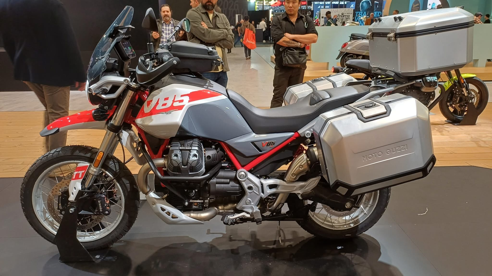
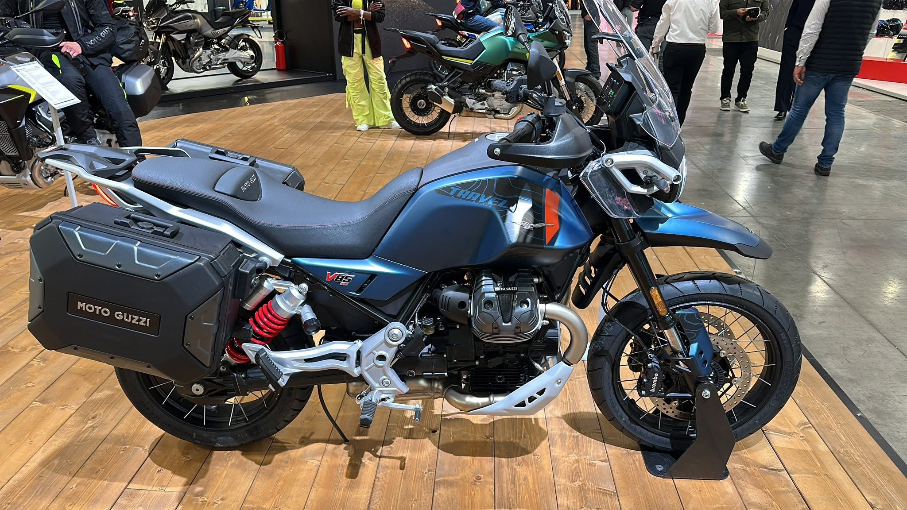

Novedades › Moto Guzzi V85 TT
Novedades · Trail media
Moto Guzzi V85 TT: la trail media con cardán que ahorra en mantenimiento
En un segmento donde todas sus rivales van con cadena y refrigeración líquida, la V85 TT defiende dos argumentos que se notan en el bolsillo: transmisión por cardán y motor enfriado por aire. 80 CV, carácter único y un coste de mantenimiento claramente inferior al de la competencia.

La respuesta rápida
La Moto Guzzi V85 TT es una trail media de 853 cc con un bicilíndrico en V a 90º refrigerado por aire que rinde 80 CV a 7.750 rpm y 83 Nm a 5.100 rpm, con transmisión por cardán. Es de las pocas del segmento (junto a la Stelvio de mayor cilindrada) que evita la cadena: no hay que engrasarla, tensarla ni cambiar el kit. Además, al no tener circuito de refrigerante, desaparecen los cambios de anticongelante y el mantenimiento del radiador. Se vende en España desde 14.100 € (Strada 13.100 €, TT Travel 15.700 €), con carnet A2 disponible en versión limitada.
Ojo con un error muy repetido en prensa: algunas fichas la describen como "refrigeración líquida". Es un gazapo — el motor de la V85 es refrigerado por aire (con radiador de aceite), como el resto de la gama Guzzi clásica.
Motor
| Cilindrada | 853 cc, bicilíndrico en V a 90º |
| Potencia | 80 CV (58,84 kW) a 7.750 rpm |
| Par | 83 Nm a 5.100 rpm |
| Refrigeración | Aire (con radiador de aceite) |
| Distribución | 2 válvulas por cilindro, empujadores |
| Transmisión | 6 marchas, cardán, embrague monodisco en seco |
| Normativa | Euro5+ (CO2: 119 g/km) |
| Consumo declarado | 4,9 l/100 km (≈ 469 km de autonomía con 23 litros) |
| Carnet | A / A2 (versión limitable) |
El carácter del motor es la mitad de la compra: el V2 transversal de Guzzi tiene un tacto único, con mucha entrega a medio régimen (83 Nm a solo 5.100 rpm) y un sonido inconfundible. No es la más rápida del grupo en punta, pero tampoco lo pretende.
Ciclística
- Horquilla invertida de 41 mm (recorrido 170 mm), regulable en precarga y extensión.
- Monoamortiguador lateral con depósito de gas, recorrido 170 mm, regulable en precarga y rebote.
- Frenos Brembo: doble disco delantero de 320 mm con pinzas radiales de 4 pistones; disco trasero de 260 mm.
- Ruedas de 19" delante y 17" detrás con neumáticos Michelin Anakee (110/80-19 y 150/70-17).
- Peso: 209 kg en seco / 230 kg en orden de marcha. Es la más pesada del segmento: se nota en ciudad, pero en carretera aporta aplomo.
- Asiento a 830 mm, depósito de 23 litros.
Mantenimiento: donde la V85 TT gana a todas sus rivales
Esta es la sección que más la diferencia de la competencia. La tabla oficial de mantenimiento (fuente: manual compilado en maintenanceschedule.com) fija:
| Servicio completo | Cada 10.000 km o 1 año (aceite + filtro + revisión válvulas) |
| Rodaje | 1.500 km (cambio de aceite y filtro, comprobación de válvulas) |
| Válvulas | Cada 10.000 km (holgura admisión 0,10 mm / escape 0,15 mm) |
| Bujías (2) | Sustitución cada 20.000 km (NGK MR8BI-8) |
| Líquido de frenos | Cada 2 años (DOT 4) |
| Aceite de caja y cardán | Cada 30.000 km (75W-140 GL5 sintético) |
Cardán frente a cadena: el gran ahorro
- Sin engrase ni reglaje de cadena: las trails de cadena (Ténéré 700, Transalp 750, V-Strom 800DE, Tuareg 660) exigen lubricar y tensar la transmisión cada 500-1.000 km. Con el cardán, la única operación programada es cambiar su aceite cada 30.000 km.
- Sin kit de transmisión que cambiar: en una trail media de cadena, el kit (cadena + piñón + corona) se sustituye cada 20.000-30.000 km con un coste de piezas de unos 150-300 €, más mano de obra. La V85 TT no tiene ese gasto.
- Válvulas baratas de ajustar: el bicilíndrico en V con cilindros expuestos se ajusta por tornillo y contratuerca (sin calas ni shims), una operación rápida y accesible incluso para el taller casero.
- Sin circuito de refrigerante: no hay anticongelante que cambiar cada 2 años ni radiador de agua que mantener. Menos piezas, menos posibles averías.
Coste estimado de la revisión anual (10.000 km) en taller oficial en España: ~180-280 € (aceite 10W-60, filtro, revisión de válvulas y diagnósticos). Es una estimación razonada: la tarifa exacta depende del taller y la mano de obra. No hay una tarifa pública oficial.
Comparativa con otras trails medias
| Modelo | Potencia | Peso | Transmisión | Refrigeración | Precio |
|---|---|---|---|---|---|
| Moto Guzzi V85 TT | 80 CV | 230 kg | Cardán | Aire | 14.100 € |
| Yamaha Ténéré 700 | 73,4 CV | 208 kg | Cadena | Líquida | 11.199 € |
| Honda Transalp 750 | 90,5 CV | 210 kg | Cadena | Líquida | 9.990 € |
| Suzuki V-Strom 800DE | 83 CV | 230 kg | Cadena | Líquida | 8.999 € (promo) |
| Aprilia Tuareg 660 | 80 CV | 204 kg | Cadena | Líquida | 12.300 € |
Ventajas de la V85 TT frente a las demás:
- Coste de mantenimiento menor: cardán + aire = casi cero mantenimiento de transmisión y refrigeración. A 50.000 km, la diferencia acumulada frente a una rival de cadena puede superar los 500-700 € solo en kits de transmisión y líquidos, sin contar el tiempo de engrase.
- Carácter y durabilidad: motor clásico, robusto y sencillo, con una estética retro única en el segmento.
- Autonomía viajera: 23 litros y 4,9 l/100 km declarados (~469 km).
- Cardán: sin mantenimiento de cadena en viajes largos ni riesgo de rotura en ruta.
Desventajas frente a las demás:
- Peso: 230 kg en orden de marcha, el más alto del grupo (Tuareg 204 kg, Ténéré 208 kg). Se nota en pista y a baja velocidad.
- Precio: es la más cara (14.100 € frente a 9.990-12.300 €), aunque ese sobrecoste se amortiza con el menor mantenimiento.
- Menos potencia específica: 80 CV para 853 cc; la Transalp 750 rinde más con menos cubicaje.
- Refrigeración por aire: en conducción muy exigente o en verano intenso, el calor disipado es mayor que en una refrigerada por líquido (contrapartida de la simplicidad).
- Hueco bajo el asiento: solo para documentación; la capacidad de carga va en maletas.
Accesorios de viaje

Si el viaje es tu prioridad, hay dos caminos: la versión Travel de fábrica (maletas Urban, parabrisas touring, puños y asiento calefactables de serie, Moto Guzzi MIA con navegación — 15.700 €) o equipar la TT estándar con accesorios. Opciones con precio de referencia (2025-2026):
| Maletas laterales de aluminio 33+39 L (oficiales Guzzi, ref. 2S001301) | ≈ 1.283 € PVP (requiere soportes ref. 2S001342) |
| Kit baúl 41 L de aluminio (oficial Guzzi, ref. 2S001302) | ≈ 726 € PVP |
| Kit maletas Urban (las de la Travel, ref. 2S0013544) | ≈ 1.029 € |
| Kit parabrisas touring (oficial Guzzi, ref. 2S001424) | ≈ 241 € PVP |
| Caballete central aftermarket (ConStands) | ≈ 155 € |
| Defensas de motor (Motoguard SG31) | ≈ 185 € |
| Set maletas 2×34 L + baúl 36 L (Bagtecs, compatible con soportes Givi/Hepco/SW-Motech) | ≈ 490 € |
| Kit Touring Plus oficial (ref. 607115M) | ≈ 858 € PVP |
Los precios de accesorios son de catálogo oficial Moto Guzzi y tiendas (2025-2026) y pueden variar. Las maletas oficiales necesitan los soportes laterales (no incluidos). En el catálogo de terceros (Givi, SW-Motech, Hepco & Becker) hay alternativas más económicas montadas sobre los mismos portaequipajes estándar.
Opiniones de la prensa
- Moto1Pro (prueba V85 2024): "Más potencia para la trail retro" — valora la subida a 80 CV, el cardán y el confort de viaje; la ve como una de las trail medias con más personalidad.
- Motociclismo.es (prueba V85): "Una trail con personalidad propia y tres interpretaciones" — destaca que no hay otra con su combinación de estética clásica, cardán y precio contenido frente a las premium de mayor cilindrada.
- Motos.net (prueba gama completa): coincide en que el argumento principal no es la potencia, sino el carácter y el bajo mantenimiento del cardán.
Lanzamiento y precio
- Gama 2024-2026 en España: Strada 13.100 €, V85 TT 14.100 €, V85 TT Travel 15.700 € (PVP orientativo 2025-2026; hay ofertas de stock en concesionarios desde ~12.000 €).
- Versiones: TT (todo terreno), TT Travel (viaje, con maletas y confort), Strada (asfalto).
- Colores mate y clásicos (Rosso, Grigio, etc.).
- Carnet A; existe versión limitable para A2.
Conclusión
La V85 TT no gana la batalla de las cifras: pesa más que sus rivales, rinde menos que la Transalp y cuesta más que todas. Pero si haces muchos kilómetros y valoras lo que cuesta mantenerla, la historia cambia: cardán y refrigeración por aire eliminan dos de los tres grandes gastos de una trail media (cadena y anticongelante) y dejan un mantenimiento sencillo, barato y predecible. Para quien busca una trail media de uso viajero, con carácter y con el menor coste por kilómetro, es probablemente la opción más racional del segmento — y la única con ese aire clásico de Mandello del Lario.
Fuentes
- Motofichas — ficha técnica V85 TT 2024-2026
- Motofichas — ficha V85 TT Travel
- Maintenance Schedule — intervalos oficiales V85 TT
- Moto Guzzi España — V85 TT
- Diariomotor — precios gama V85 2024
- Moto Guzzi — accesorios de equipaje oficiales
- Wikimedia Commons — imagen V85 TT (CC BY-SA 4.0)
- Wikimedia Commons — imagen V85 TT Travel (CC BY-SA 4.0)